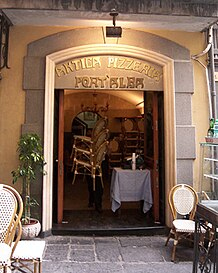
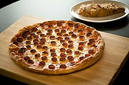

Історія піци
Історія піци починається в Стародавній Греції, коли греки почали випікати великі круглі й плоскі коржі поряд зі звичайним хлібом. Для начинки використовували овочі, фрукти й м'ясо.
Згідно етимологічному словнику италійської мови, слово pizza походить від латинського слова pinsere — товкти. За іншими версіями, pizza походить від ломбардського bizzo або pizzo, що означає «з'їсти щось за один раз або укус».
Попередником піци, ймовірно, була фокачча, коржик, відомий римлянам як panis fokacus, до якого потім додавали начинку. Сучасного вигляду піца набула в Неаполі, Італія, у XVIII або на початку XIX століття.
Слово піца вперше з'явилось в латинському тексті в н.е 997 центрального італійського міста Гаеті.
Піцу в основному їли в Італії та емігранти звідти. Це змінилося після Другої світової війни, коли війська союзників, дислоковані в Італії, почали насолоджуватися піцою разом з іншими італійськими стравами.
Витоки
На острові Сардинія французькі та італійські археологи знайшли хліб, якому понад 7000 років тому. За словами Філіпа Марінваля місцеві остров'яни, сардинці, квасили цей хліб. Плаский хліб в глиняних печах запікали стародавні євреї, вавілонці, єгиптяни, греки.
- У VI столітті до нашої ери перські солдати, які служили при Дарії Великому, пекли коржики з сиром і фініками поверх своїх бойових щитів.
- У Стародавній Греції жителі готували корж під назвою плакус (πλακοῦς, род. πλακοῦντος – plakountos), який був приправлений такими начинками, як зелень, цибуля, сир і часник.
- Рання згадка про їжу, схожу на піцу, зустрічається в «Енеїді» (бл. 19 р. до н. е.), коли Селена, цариця Гарпій, передрікає, що троянці не знайдуть спокою, доки вони не будуть змушені голодом їсти свої столи (Книга III). У книзі VII Енею та його людям подають їжу, яка включає круглі коржі (наприклад, лаваш), покриті вареними овочами. Коли вони їдять хліб, вони розуміють, що це «столи», пророчені Селено.
Деякі коментатори припускають, що походження сучасної піци можна простежити до піцареллі, яка була кошерною для пасхального печива, яке римські євреї їли після повернення із синагоги в це свято, хоча деякі також простежують її походження до іншого італійського пасхального хліба. В той же час є версія, що фокачча (перекладається як хліб запечений в печі, panis focacius), є віддаленим прародичем піци. Інші приклади пласких хлібців, які збереглися до наших днів із стародавнього середземноморського світу, — це манакіш у Леванті, кока (має солодкі та пікантні сорти) з Каталонії, Валенсії та Балеарських островів ; грецька піта ; лепінья на Балканах ; або п'ядіна в частині Емілії-Романьї в Італії, в регіоні Романья.
 Піццерія Antica Pizzeria Port'Alba в Неаполі, вважається першою в світі піцерієюВ інших частинах світу це можуть бути китайський бінг (китайська їжа на основі пшеничного борошна з плескатою або дископодібною формою); індійська парата (до складу якої входить жир); середньо- та південноазійські наан (дріжджовий) і роті (бездріжджовий); сардинський карасау, спианата. У фінів це рієска. В Європі існує багато рецептів пирогів, заснованих на ідеї покриття плоского тіста сиром, м'ясом, овочами та приправами, таких як ельзаський фламбе, німецький цибулевий пиріг і французький кіш.
У XVI столітті в Неаполі тонкий корж, що запікали в печі, називали піцею. Це була страва для бідних людей, вулична їжа, яка не вважалась особливим кухонним рецептом. Тільки після того, як іспанці привезли помідори з американського континенту, піца була винайдена в сучасній концепції. Кажуть, що помідори потрапили до Королівства Неаполь і Сицилія, яке на той час було частиною Іспанської імперії, через Педро Альвареса де Толедо в XVI столітті або віце-короля Мануеля де Амата, який, можливо, подарував трохи насіння Неаполітанці в 1770 році від імені віце-королівства Перу.
Піца в Канаді
В Канаді перша піцерія була відкрита в 1948 році. Це була Pizzeria Napoletana в Монреалі. А печі для її випікання почали надходити в країну наприкінці 1950-х років. Найбільш затребуваними вони стали протягом 1960-х років, коли по всій країні відкривалося багато піцерій і ресторанів. Піцу подавали як в ресторанах так і невеликих піцеріях. Сучасні піцерії в своїй більшості також пропонують популярні італійські срави, такі як паста, салати, супи та равіолі. Мережі піцерій швидкого харчування також пропонують клієнтам інші варіанти на вибір, окрім замовлення піци, зокрема курячі крильця, картоплю фрі, салати і кальцоне. Піца Попс — це канадська закуска типу кальцоне, яка була представлена в 1960-х роках. Мережі піцерій по всій Канаді можна знайти в торговельних центрах, школах і на прилеглих площах. Більшість із цих мереж пропонують клієнтам можливість посидіти й пообідати.
Піца в США
 Фото класичної і закритої піци (кальцоне)В США піца вперше з'явилася з прибуттям італійських іммігрантів наприкінці XIX століття.
До 1940-х років піцу споживали переважно італійські іммігранти та їхні нащадки. Після Другої світової війни ветерани, які повернулися з італійської кампанії, були вже добре знайомі з місцевою кухнею Італії. Й ринок Америки виявився готовим для розвитку піцерій. Ці заклади рекламували "ветерани, починаючи від найнижчого рядового до Дуайта Д. Ейзенхауера ". До 1960-х років піци були достатньо популярним, щоб їх можна було побачити в епізоді Попая-мореплавця.
До 1970-х рр. місцеві піцерії, якими часто керували італійські або (пізніше) грецькі мігранти, стали визначальною рисою життя в містах і передмістях зі значною кількістю етнічних італійців. Особливо навколо Нью-Йорка, Філадельфії та Чикаго. У таких піцеріях зазвичай окрім піци продавали сендвічі. З 1990-х також з'явились гіроси. Тонкі невеликі коржі з начинкою з овочів і м'яса. Чимось схожі на мексиканські тако. Поступово конкуренція між невеликими ресторанами тиха, але інтенсивна, призвела до високого рівня якості, який часто дивує відвідувачів з інших куточків США та є предметом регіональної гордості.
Цікавий факт
Піца від Гордона Рамзі колись була внесена до Книги рекордів Гіннесса,
як найдорожча в світі піца, доступна для придбання. До начинки цієї
тонкої піци входять: пюре з цибулі, паста з білих трюфелів, сир
фонтіна, baby-моцарелла, панчетта (різновид бекону), білі гриби і
свіжа курчаволиста гірчиця.
Піца готується на багатті і
прикрашена дуже рідкісним італійським білим трюфелем, вартість якого
становить 2 500 доларів США за 1 кг. Одна піца продається за 250
доларів в ресторані Maze шеф-кухаря Гордона Рамзі в Лондоні. Піцу
готують з ікрою, лобстерами, олениною і навіть прикрашають пелюстками
листового золота.
Піца в Україні
Перша піцерія в Україні із назвою "Базис" відкрилась у 1987 році у Чернігові, а піца коштувала всього 40 копійок.
Рецепт піци був розроблений у 1986 році в Тернополі.
Спочатку у меню було лише 5 позицій, які зовсім не були схожі на традиційну неаполітанську та американську піци.
Але саме звідти почався розвиток культури піцерій в Україні, що дозволяє зараз нам насолоджуватись якісним та конкурентним продуктом.